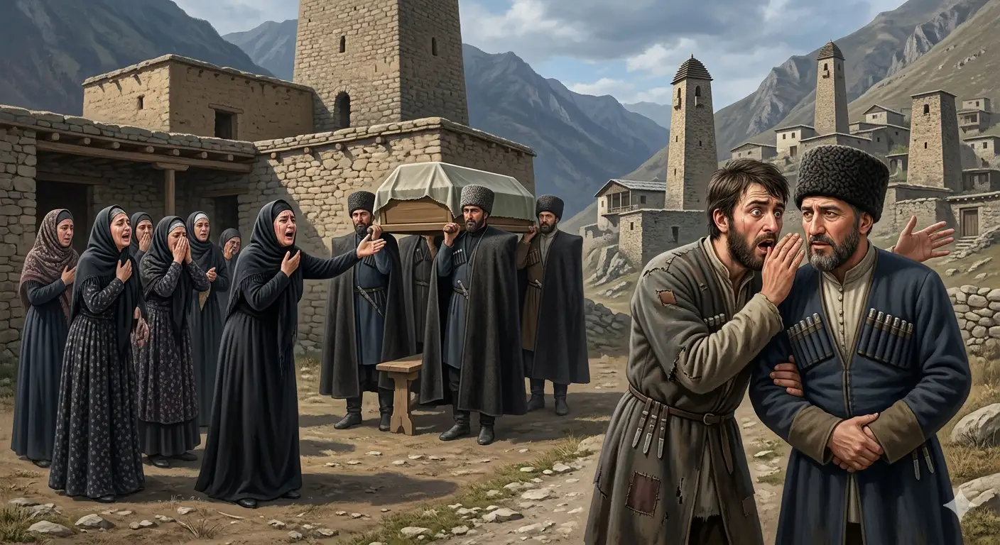

И.А. Дахкильгов. Хьехаме дувцарш - поучительные рассказы-притчи.
И.А. Дахкильгов. Хьехаме дувцарш - поучительные рассказы-притчи. Из ингушского фольклора.

Хьо волча хьош ва ер
Цхьа хьаьша нийсавеннав даахӀама а, сага лампа а, ювза цӀи а йоацача шийлача фусаме. Пхьераза шийлача метта вужаваьв из. Ӏуйранна фусам-даьга лоалахара саг венав, юрта цхьа фунехк-даь саг кхелхав, аьнна. ГӀоттаваь ший хьаьша а ийца, таьзета волавеннав фусамда. Ераш таьзета дӀаэтта тоъал ха яьннача гӀолла дакъа араэцаш хиннад. Цунна тӀехьа истий белхаш хиннаб: - Ювза цӀи йоацача, даа шу доацача, шийлеи баьдеи йолча, сага лампа йоацача фусаме ма водий хьо, ва-а нанас яьр яларг! Хьашас мӀишка яьй ший фусамдаьна: - Жи, сихагӀа чу а гӀой, хьай фусам цхьалхаяьккха, ер дакъа-м хьо волча хьош хиннад.
РУССКИЙ
Его несут к тебе
Некий мужчина оказался в гостях в доме, в котором царили бедность и убогость; не было ни еды, ни света, ни очага. Голодным лег гость в холодную постель. Утром к хозяину дома пришли с вестью, что в селе скончался какой-то его родственник. Хозяин дома прихватил с собою гостя и пошел на похороны. Когда они подошли к дому, в котором был покойнк, его уже выносили со двора. По обычаю женщины стали плакать и причитать: - Да умрем мы за тебя! Да ведь уходишь ты в тот мир, в котором нет ни света, ни тепла, ни еды, ни питья! Гость поддел под бок хозяина и шепнул: - Дуй скорее домой, наведи там хоть какой-то порядок, оказывается, мертвеца несут в твой дом. Такими бывают некоторые хозяева.
ENGLISH
They're bringing him to you
A man found himself a guest in a house where poverty and squalor reigned; there was neither food, nor light, nor a hearth. Hungry, the guest lay down in a cold bed. In the morning, word came to the master of the house that a relative of his had died in the village. The master of the house took the guest with him and went to the funeral. When they approached the house where the deceased lay, the body was already being carried out of the yard. As was the custom, the women began to weep and wail: 'May we die for you! For you are departing for that world where there is neither light, nor warmth, nor food, nor drink!' The guest nudged the host in the side and whispered: 'Hurry home, and sort things out a bit—it turns out they're carrying the dead man to your house.' That's the sort of host some people are.
НОХЧИЙН
Хьо волче хьуш ву хӀара
Цхьа хьаша нисвелла даахӀума а, лато чиркх а, йаго цӀе а йоцучу шийлачу хӀусаме. Пхьераза шийлачу метта вижийна иза. Ӏуьйранна хӀусам-дена лулара стаг веъна, йуьртахь цхьа хӀунехк-ден стаг кхелхина, аьлла. ГӀаттийна шен хьаша а эцна, тезета волавелла хӀусам-да. ХӀорш тезете дӀахӀоьттина тоъал хан йаьллачухула дакъа араоьцуш хилла. Цуьнан тӀаьхьа зударий белхаш хилла: - Йаго цӀе йоцучу, даа шун доцучу, шийлий боданий йолчу, лато чиркх боцучу хӀусаме ма воьдий хьо, ва-а нанас йинарг йаларг! Хьашас муьшка йина шен хӀусам-дена: - Же, сихах чу а гӀой, хьай хӀусам къепе йалайе, хӀара дакъа-м хьо волче хьуш хилла.
ПОГОВОРКИ
Данза даргдоаца хӀама сихагӀа дӀадоладе; ала дезача дош ала. Быстрее начинай то, что сделать необходимо; а там, где надо сказать, немедля скажи свое слово. Start quickly what must be done; say without delay what must be said. Данза дерадоцу хӀума сихах дӀадоладе; ала дезачехь дош ала.Даьна тайча, - ворда етта декъий. Если хозяина устраивает, пусть получит полную арбу покойников. If it suits the master, let him have a whole cartload of the dead. Дена тайча, - ворда йоьттина декъий.“Доалда боаг мотт сона”, яьхад хьаьшас. “У вас на печи что-то горит”, - намекал гость. "Something's burning on your stove," the guest hinted. "Дола дешдерг догу моьтту суна", баьхна хьашас.ЗагӀа дӀаденначоа дукха хет, дӀаийцачоа кӀезига хет. Подающему на похоронах кажется, что много дал, а получившему – что мало получил. The one who gave at the funeral thinks he gave a lot; the one who received thinks it was too little. СагӀа дӀаделлачун дукха хета, дӀайецначун кӀезиг хета.Йисте лийначоа йис кхийттай. Того, кто ходит с краю, иней накрыл. One who walked along the edge got covered in frost. Йисте леллачун йис кхетта.Кхаь шера цкъа моцал отташ а хул, ворхӀ шера цкъа у доагӀаш а хул. Бывает, раз в три года приходит голод, а раз в семь лет – зараза. Famine comes once every three years; plague comes once every seven. Кха шарахь цкъа мацалла хӀуттуш а хуьлу, ворхӀ шарахь цкъа ун догӀуш а хуьлу.Къе саг къушта а ва гоама. Бедного и воры не любят. Even thieves don't care for a poor man. Къен стаг къуйшна а ву гома.Къечоа атта да: гӀув бетта безац цун. Хорошо бедняку: ему не надо хлев держать на запоре. It's easy for the poor man — he has no barn to keep locked. Къечун атта ду: гӀуй болла безац цунна.Нана йийлхача, бераш дийлхад, бераш дийлхача, да. Всплакнула жена, заплакали дети, а за ними заревел и отец. When the mother wept, the children wept too; when the children wept, the father followed. Нана йилхича, бераш дилхина, бераш дилхича, да.Рузкъа долчагӀа малх а бӀайхагӀа хьеж. Где богатство, там и солнце теплее светит. Where there is wealth, the sun seems to shine warmer. Рицкъ долчехь малх а бовхах хьоьжу.Фусам-да вовзаргва, цун ков-картага хьежача. Каков хозяин узнаешь, обозрев его дом и двор. You can tell what the master is like by looking at his house and yard. ХӀусам-да вевзар ву, цуьнан ков-керте хьаьжча.Шийла я мехках ваьнна лелачоа, йӀайха я даь кхуврча йисте вагӀачоа. Холодно тому, кто блуждает на чужбине, тепло тому, кто греется у родного очага. It's cold for one wandering a foreign land; it's warm for one sitting by their own hearth. Шийла йу махках ваьлла лелачун, йовха йу ден кхерчан йисте вехачун.